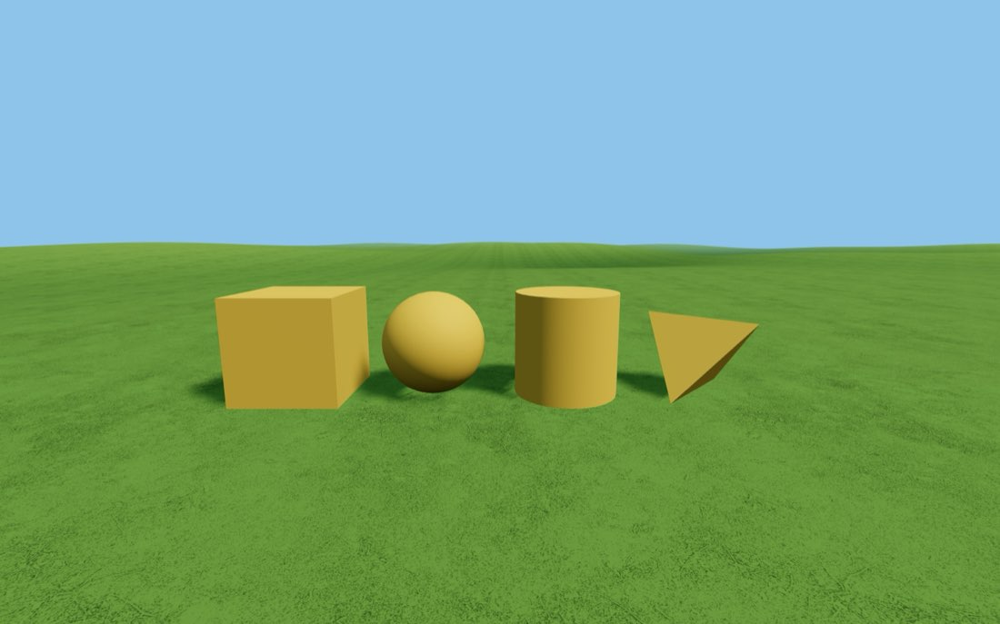
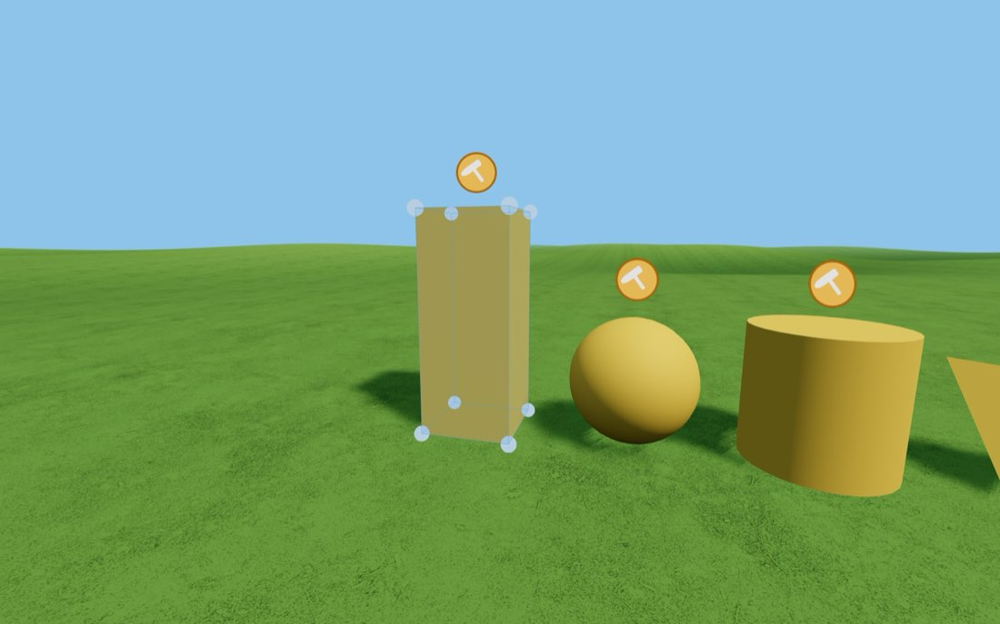
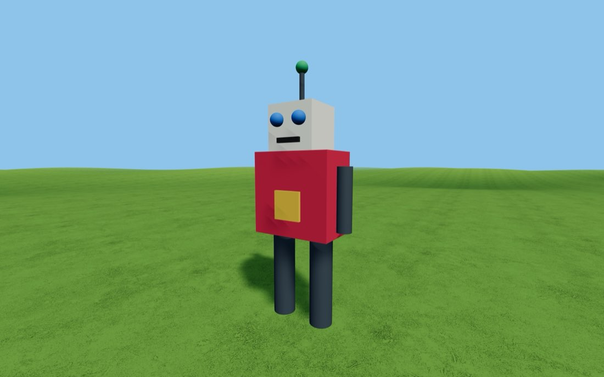

🔨 The Model Builder
Build anything you can picture out of four simple shapes — then turn the pile into one solid model.
Getting there: open Edusim, tap ☰ Menu → Create Model → pick a shape. It lands on the grass a few steps in front of you, bright yellow, with an orange 🔨 floating over it. Yellow and a hammer mean still being built.



The hammer menu
Click the 🔨 above any unfinished piece and these seven appear.
Apply Texture
Colour it, or wrap a picture round it
Seven colour swatches, a full colour picker if none of them is right, and Upload an Image for a photo from your own computer. Colour and picture are either/or — choosing one clears the other, because a colour laid over a photo just makes mud.
Stretch to Shape
One blue box, three different drags
- A corner handle — stretch. The corner diagonally opposite stays exactly where it is, so a piece never wanders off while you resize it.
- The middle of the box — slide the piece about. It keeps whatever height it is at and follows the hills, so a piece on the grass stays on the grass and a piece up in the air stays up in the air.
- The green ball above the box — move the piece anywhere. Start the drag up or down to raise and lower it; start it sideways to slide it around in mid-air. It stops at ground level, so nothing can be buried.
💡 The axis pointing straight away from you is the hardest one to stretch — walk around to the side and it becomes easy. Press ✓ Done stretching or Esc to finish.
Rotate/Move Shape
Three rings to turn it — and the same box and ball to move it
- The flat amber ring — spins the piece on the spot, like a record on a turntable.
- The upright red ring — tips it forwards and backwards.
- The upright violet ring — tips it left and right.
Turning snaps every 15°, so square corners and neat 45° angles land exactly, and two pieces turned the same amount really are turned the same amount. The rings stay put as the piece turns inside them — the flat one is always the flat one. And the blue box and green ball work here exactly as they do in Stretch to Shape, so a turned piece can be slid, raised and lined up without leaving this screen.
💡 A ring you are looking straight along is a line, and a line is hard to grab. Take two steps sideways and it opens back up into a circle.
Connect to Primitive
Join this piece to one it is touching
The list only ever shows pieces that are actually touching this one. That is the safety net: you cannot accidentally weld an arm to something across the field. Join outwards from the middle of your model until everything is in one chain — the note at the bottom tells you how many pieces the model is up to.
💡 "Nothing is touching this piece" means exactly that. Go back to Stretch to Shape and slide the two together until they overlap a little.
Remove Shape
Take a piece back out of the world
Deletes just that one piece. Nothing else moves, and any piece that was joined to it simply forgets it — the rest of your model is untouched. There is no "are you sure": putting the shape back is two clicks, and a warning you have to dismiss every time is worse than the mistake it prevents.
💡 This is the fix for "I meant to add a cylinder and clicked cube". It only works on pieces that are still being built — once you press Render Model there are no pieces left to remove.
Render Model
Turn the whole chain into one object
The hammers disappear and the pieces become a single model. From then on it behaves like everything else in the world: click it for Size, Move and Program, it saves itself, it travels inside a saved world file, and the duplicate block will copy the whole thing.
⚠️ Render is a one-way door. Do it last, and check your piece count first.
Try these three
-
Four shapes, one creature
Give yourself exactly four pieces — no more — and make something recognisable. A duck, a lamp, a chair. Constraints make better models than unlimited pieces do.
-
Photograph something real
Take a photo of a brick wall, some grass or your own front door. Upload it onto a stretched cube and see how much more real one texture makes a whole building look.
-
Build to scale
You are five feet tall in this world. Build a chair you could actually sit in, then a door you could actually walk through, then stand next to both and check.
Two rules that catch everybody
- Stacking needs the green ball — and so does lining a lifted piece up over the one below it. Raise it, then slide it until it sits square.
- Touching, then joining — Connect will not list a piece that is floating a hair's breadth away.
The Model Builder needs a normal screen — the hammer menu and the handles are not available inside a VR headset, so choosing it from the VR menu is not offered. Build on a laptop or tablet, then put the headset on to go and stand next to what you made.